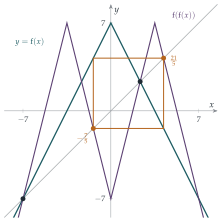
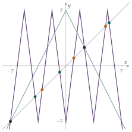
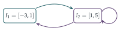

STEP III 2025, Question 2
Read the question before you go on. It is in the STEP III paper in OCR’s download of the 2025 STEP papers (a zip file): www.ocr.org.uk/Images/750486-2025-past-papers.zip
The hook
In 1975 Tien-Yien Li and James Yorke published a paper in the American Mathematical Monthly with one of the most famous titles in mathematics: “Period three implies chaos”. They proved that if a continuous function from an interval to itself has a point of period \(3\) (a starting value that returns after exactly three steps), then it has points of every period: \(1\), \(2\), \(4\), \(5\), \(17\), \(1000\), all of them. Their paper also introduced the word “chaos” into mathematics.
This question, set in 2025, is a hands-on tour of that theorem. The function \(\mathrm{f}(x) = 7 - 2|x|\) is built from two straight lines, so everything can be computed exactly. You find its \(2\)-cycles and its \(3\)-cycles, and in doing so see why the existence of one forces the existence of the rest.
Before you start
What does the graph of \(y = 7 - 2|x|\) look like? Where does it cross the line \(y = x\)? Where does it send the interval \([-7, 7]\)?
The graph is an upside-down V with its peak at \((0, 7)\) and gradients \(\pm2\). It meets \(y = x\) where \(x = 7 - 2x\) (with \(x \geq 0\)), giving \(x = \frac73\), and where \(x = 7 + 2x\) (with \(x < 0\)), giving \(x = -7\). These are the fixed points: start there and the sequence never moves. Also \(\mathrm{f}(-7) = \mathrm{f}(7) = -7\) and \(\mathrm{f}(0) = 7\), so \(\mathrm{f}\) maps \([-7, 7]\) onto itself, stretching it to twice its length and folding it in half.
Working it through
Stage 1 The graph of \(\mathrm{f}\circ\mathrm{f}\)
As \(x\) goes from \(-7\) to \(7\), \(\mathrm{f}(x)\) goes from \(-7\) up to \(7\) and back down to \(-7\). What does \(\mathrm{f}(\mathrm{f}(x))\) do?
As \(x\) runs from \(-7\) to \(0\), \(\mathrm{f}(x)\) runs over the whole of \([-7, 7]\), so \(\mathrm{f}(\mathrm{f}(x))\) traces out a complete copy of the V: up from \(-7\) to \(7\) and down again. The same happens as \(x\) runs from \(0\) to \(7\). So on \([-7, 7]\) the graph of \(\mathrm{f}\circ\mathrm{f}\) is a W-shape turned upside down: four straight pieces of gradient \(\pm4\), each running between heights \(-7\) and \(7\), with peaks at \(x = \pm\frac72\) (where \(\mathrm{f}(x) = 0\)) and a dip to \(-7\) at \(x = 0\) (Figure 8.8.1). Outside \([-7, 7]\) both graphs fall away steeply.
Stage 2 Solving \(\mathrm{f}(\mathrm{f}(x)) = x\)
Each of the four straight pieces crosses the diagonal \(y = x\) exactly once. Two of the crossings you already know. Why? How can you find the other two without expanding nested absolute values?
The fixed points \(\frac73\) and \(-7\) certainly satisfy \(\mathrm{f}(\mathrm{f}(x)) = x\). Any other solution \(p\) belongs to a \(2\)-cycle \(p \to q \to p\) with \(q = \mathrm{f}(p) \neq p\). Try the signs. If \(p\) and \(q\) are both positive, then \(q = 7 - 2p\) and \(p = 7 - 2q\), which forces \(p = q = \frac73\); if both are negative, the same argument gives \(-7\). So one is positive and one negative, say \(p > 0 > q\): \[q = 7 - 2p, \qquad p = 7 + 2q.\] Then \(p = 7 + 14 - 4p\), so \(p = \frac{21}{5}\) and \(q = -\frac75\), which indeed has \(q < 0\).
Outside \([-7, 7]\) there are no solutions: for \(x > 7\) we have \(\mathrm{f}(\mathrm{f}(x)) = 21 - 4x < x\), and for \(x < -7\) we have \(\mathrm{f}(\mathrm{f}(x)) = 21 + 4x < x\). So the four solutions are \[x = -7, \quad -\tfrac75, \quad \tfrac73, \quad \tfrac{21}{5}. \qed\] The sequence has period \(2\) exactly when \(a = \frac{21}{5}\) or \(a = -\frac75\). (At the fixed points the sequence is constant, with period \(1\).)
Stage 3 Arriving at a cycle late
With \(a = \frac{28}{5}\): \(u_1 = 7 - \frac{56}{5} = -\frac{21}{5}\), \(u_2 = 7 - \frac{42}{5} = -\frac75\), \(u_3 = 7 - \frac{14}{5} = \frac{21}{5}\), \(u_4 = -\frac75\), and so on. From \(u_2\) onwards the sequence is the \(2\)-cycle, but \(u_0 = \frac{28}{5}\) and \(u_1 = -\frac{21}{5}\) are not in it.■
How could you have found \(\frac{28}{5}\) yourself? Work backwards: which numbers does \(\mathrm{f}\) send to \(-\frac75\)?
\(\mathrm{f}(x) = -\frac75\) means \(|x| = \frac{21}{5}\), so \(x = \pm\frac{21}{5}\). One of these is in the cycle; the other, \(-\frac{21}{5}\), is a way in. Then \(\mathrm{f}(x) = -\frac{21}{5}\) means \(|x| = \frac{28}{5}\). Because \(\mathrm{f}\) is two-to-one, every point of \((-7, 7)\) has two preimages, and so every cycle has a tree of starting values that feed into it.
Stage 4 Three-cycles
Compute the sequences starting from \(a = 1\) and \(a = -\frac79\).
From \(a = 1\): \(1 \to 5 \to -3 \to 1\). From \(a = -\frac79\): \(-\frac79 \to \frac{49}{9} \to -\frac{35}{9} \to -\frac79\). Both are \(3\)-cycles.
How many solutions can \(\mathrm{f}(\mathrm{f}(\mathrm{f}(x))) = x\) have? Think about the shape of its graph, as in Stage 1.
Repeating the argument of Stage 1, each time we apply \(\mathrm{f}\) again the number of straight pieces doubles. So on \([-7, 7]\) the graph of \(\mathrm{f}\circ\mathrm{f}\circ\mathrm{f}\) is a zigzag of eight pieces, of gradient \(\pm8\), each running the full height from \(-7\) to \(7\) (Figure 8.8.2). Each piece crosses the diagonal exactly once, so there are exactly eight solutions in \([-7, 7]\), and (as before) none outside. We have found eight: the two fixed points and the six points of the two \(3\)-cycles. So the solutions are \[x = -7,\ \tfrac73,\ 1,\ 5,\ -3,\ -\tfrac79,\ \tfrac{49}{9},\ -\tfrac{35}{9}. \qed\]
Stage 5 A late arrival at a \(3\)-cycle
Work backwards from the cycle \(1 \to 5 \to -3\). We want \(u_3\) in the cycle but \(u_2\) not. The preimages of \(1\) satisfy \(|x| = 3\), so \(x = \pm3\); \(-3\) is in the cycle, so take \(u_2 = 3\). The preimages of \(3\) satisfy \(|x| = 2\); take \(u_1 = 2\). The preimages of \(2\) satisfy \(|x| = \frac52\); take \(u_0 = \frac52\). Then \[\tfrac52 \to 2 \to 3 \to 1 \to 5 \to -3 \to 1 \to \cdots,\] and none of \(\frac52\), \(2\), \(3\) is in the cycle. So \(a = \frac52\) works.■


Looking back
Count by shape. Instead of expanding nested absolute values, we counted the straight pieces of the graph. That told us how many solutions to look for, and so when we had found them all.
Use the structure of cycles. Solutions of \(\mathrm{f}(\mathrm{f}(x)) = x\) come as fixed points or in pairs; solutions of \(\mathrm{f}(\mathrm{f}(\mathrm{f}(x))) = x\) as fixed points or in threes.
Work backwards. Preimages built the “late arrivals” in (i)(d) and (ii)(c).
What’s really going on
Cycles of every length
The counting in Stage 4 works for any number of steps. Write \(\mathrm{f}^n\) for \(\mathrm{f}\) applied \(n\) times. On \([-7, 7]\) the graph of \(\mathrm{f}^n\) has \(2^n\) straight pieces, each running the full height, so \(\mathrm{f}^n(x) = x\) has exactly \(2^n\) solutions. Some of them have a shorter period \(d\) dividing \(n\), but there are at most \(2^d\) of those for each \(d\), and \[2^n > 2^{n/2} + 2^{n/3} + \cdots + 2^1 \quad\text{(summing over the divisors $d < n$ of $n$)}\] because all the divisors less than \(n\) are at most \(n/2\), and \(2^1 + 2^2 + \cdots + 2^{\lfloor n/2\rfloor} < 2^{\lfloor n/2\rfloor + 1} \leq 2^n\). So for every \(n\) there are points whose period is exactly \(n\). This function has cycles of every length.
Why period three forces everything
Li and Yorke’s theorem says this is not special to our function: any continuous \(\mathrm{g}\) from an interval to itself with a \(3\)-cycle has cycles of every length. The proof uses nothing more than the intermediate value theorem, and our \(3\)-cycle shows how it goes.
Let \(I_1 = [-3, 1]\) and \(I_2 = [1, 5]\), the two intervals between the points of the cycle \(1 \to 5 \to -3\). Where does \(\mathrm{f}\) send each of them?
On \(I_2\), \(\mathrm{f}\) is decreasing from \(\mathrm{f}(1) = 5\) to \(\mathrm{f}(5) = -3\), so \(\mathrm{f}(I_2) = [-3, 5] = I_1 \cup I_2\). On \(I_1\), \(\mathrm{f}\) goes from \(\mathrm{f}(-3) = 1\) up to \(\mathrm{f}(0) = 7\) and down to \(\mathrm{f}(1) = 5\), so \(\mathrm{f}(I_1) = [1, 7]\), which contains \(I_2\). Notice that only the three points of the cycle were used: any continuous function with a \(3\)-cycle \(a \to b \to c\), \(a < b < c\), covers its intervals in the same way. We can summarise it as a diagram of which interval covers which (Figure 8.8.3): \[I_1 \to I_2, \qquad I_2 \to I_1, \qquad I_2 \to I_2.\] The theorem then follows from two facts, both consequences of the intermediate value theorem.
If \(\mathrm{g}(I) \supseteq I\) then \(\mathrm{g}\) has a fixed point in \(I\). (Apply the intermediate value theorem to \(\mathrm{g}(x) - x\).)
If \(\mathrm{g}(I) \supseteq J\) then there is a smaller closed interval \(I' \subseteq I\) with \(\mathrm{g}(I') = J\) exactly.
To find a point of period \(n\), follow the loop \(I_2 \to I_2 \to \cdots \to I_2 \to I_1 \to I_2\) in the diagram: \(n - 1\) steps inside \(I_2\) and one step out to \(I_1\) and back. Using the second fact repeatedly, we can shrink \(I_2\) to an interval of starting points whose orbits follow this itinerary, and \(\mathrm{g}^n\) maps that interval onto all of \(I_2\). The first fact gives a point \(x\) with \(\mathrm{g}^n(x) = x\) that visits \(I_1\) only at step \(n - 1\). Its period cannot be smaller than \(n\), because then the visit to \(I_1\) would be repeated earlier. (There is one subtlety, since \(I_1\) and \(I_2\) share the point \(1\); checking that it causes no trouble is an exercise.)

Li and Yorke were not the first. In 1964 the Ukrainian mathematician Oleksandr Sharkovskii had proved a far more complete result, published in Russian in the Ukrainian Mathematical Journal and unknown in the West for a decade. Order the positive integers as \[3,\ 5,\ 7,\ 9,\ \ldots,\ \ 2\cdot3,\ 2\cdot5,\ \ldots,\ \ 2^2\cdot3,\ 2^2\cdot5,\ \ldots,\ \ \ldots,\ \ 2^3,\ 2^2,\ 2,\ 1:\] first the odd numbers from \(3\) upwards, then twice the odd numbers, then four times the odd numbers, and so on, ending with the powers of \(2\) in decreasing order. Sharkovskii’s theorem says that if a continuous function on an interval has a cycle of length \(m\), then it has cycles of every length that comes after \(m\) in this list. Since \(3\) comes first, period \(3\) implies every period. And the theorem is sharp: for every \(m\) there is a function with a cycle of length \(m\) and no cycles of lengths earlier in the list. The powers of \(2\) at the end are exactly the period-doubling cascade of the logistic map in Section 8.7, and the \(3\)-cycle appears there at \(k = 1 + \sqrt8\).
The tent map and the logistic map
Substitute \(x = 14y - 7\), which maps \([0, 1]\) onto \([-7, 7]\). A short calculation shows that \(\mathrm{f}\) becomes the tent map \[T(y) = \begin{cases} 2y & 0 \leq y \leq \tfrac12, \\ 2 - 2y & \tfrac12 \leq y \leq 1, \end{cases}\] and the further substitution \(u = \sin^2(\pi y / 2)\) turns the tent map into the logistic map \(u \mapsto 4u(1 - u)\). So the function in this question is the chaotic logistic map of Section 8.7, straightened out. Its eight solutions of \(\mathrm{f}^3(x) = x\) correspond to the eight solutions of \(\sin^2(8\theta) = \sin^2\theta\) in \([0, \frac{\pi}{2}]\).
The thinking skill
To show that a solution exists, you do not always need to find it. Show that a continuous function changes sign, or that an interval is mapped over itself.
In this question every solution could be computed. But Li and Yorke’s theorem applies to functions we cannot compute with at all, and it proves the existence of infinitely many cycles using only the intermediate value theorem and a diagram of which interval covers which. At university this style of argument, existence without construction, appears in analysis (the intermediate value theorem itself), in topology (fixed point theorems) and throughout dynamical systems.
Try this next
A \(4\)-cycle. Use the covering diagram to predict where a \(4\)-cycle of \(\mathrm{f}\) should be (three steps in \(I_2\), one in \(I_1\)). Then find it exactly. (Hint: the cycle has three positive points and one negative point; write down the four linear equations.)
The subtlety. In the proof that period \(3\) implies period \(n\), explain why the point \(x\) found cannot be the point \(1\) (or any point of the original \(3\)-cycle) when \(n \geq 4\).
Period \(5\) without period \(3\). Sketch the graph of a continuous function on \([1, 5]\) with \(\mathrm{g}(1) = 3\), \(\mathrm{g}(3) = 4\), \(\mathrm{g}(4) = 2\), \(\mathrm{g}(2) = 5\), \(\mathrm{g}(5) = 1\), joining these points with straight lines. Draw its covering diagram for the intervals \([1, 2]\), \([2, 3]\), \([3, 4]\), \([4, 5]\). Can you find a loop of length \(3\)? (Sharkovskii’s theorem says there is no \(3\)-cycle.)
The tent map. Check that \(x = 14y - 7\) turns \(\mathrm{f}\) into the tent map. Then show that the tent map doubles \(y\) written in binary, flipping all the digits whenever the leading digit is \(1\), and use this to find its \(3\)-cycles.
Further reading
Tien-Yien Li & James Yorke, “Period three implies chaos”, American Mathematical Monthly 82 (1975). Short, and readable with the intermediate value theorem.
Robert Devaney, A First Course in Chaotic Dynamical Systems (CRC Press). Written for undergraduates; covers the tent map, the logistic map and Sharkovskii’s theorem with full proofs.
Keith Burns & Boris Hasselblatt, “The Sharkovsky theorem: a natural direct proof”, American Mathematical Monthly 118 (2011). A modern proof using covering diagrams.